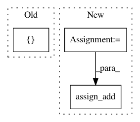

71bc15c9bdf7be38275c0bf4b3d51afd28620930,deepchem/models/layers.py,DAGLayer,call,#DAGLayer#Any#,2432
Before Change
// generating index for graph features used in the inputs
index = tf.stack(
[
tf.reshape(
tf.stack(
[tf.boolean_mask(tf.range(n_atoms), mask)] *
(self.max_atoms - 1),
axis=1), [-1]),
tf.reshape(tf.boolean_mask(parents[:, count, 1:], mask), [-1])
],
axis=1)
// extracting graph features for parents of the target atoms, then flatten
// shape: (batch_size*max_atoms) * [(max_atoms-1)*n_graph_features]
After Change
tf.stack(
[tf.boolean_mask(tf.range(n_atoms), mask)] * (self.max_atoms - 1),
axis=1), [-1])
stack2 = tf.reshape(tf.boolean_mask(parents[:, count, 1:], mask), [-1])
index = tf.stack([stack1, stack2], axis=1)
// extracting graph features for parents of the target atoms, then flatten
// shape: (batch_size*max_atoms) * [(max_atoms-1)*n_graph_features]
batch_graph_features = tf.reshape(
tf.gather_nd(self.graph_features, index),
[-1, (self.max_atoms - 1) * self.n_graph_feat])
// concat into the input tensor: (batch_size*max_atoms) * n_inputs
batch_inputs = tf.concat(
axis=1, values=[batch_atom_features, batch_graph_features])
// DAGgraph_step maps from batch_inputs to a batch of graph_features
// of shape: (batch_size*max_atoms) * n_graph_features
// representing the graph features of target atoms in each graph
batch_outputs = _DAGgraph_step(batch_inputs, self.W_list, self.b_list,
self.activation_fn, self.dropout,
dropout_switch)
// index for targe atoms
target_index = tf.stack([tf.range(n_atoms), parents[:, count, 0]], axis=1)
target_index = tf.boolean_mask(target_index, mask)
// update the graph features for target atoms
//self.graph_features = tf.compat.v1.scatter_nd_update(
// self.graph_features, target_index, batch_outputs)
self.graph_features.assign_add(
tf.compat.v1.scatter_nd_update(self.graph_features, target_index,
batch_outputs))
return batch_outputs
class DAGGather(tf.keras.layers.Layer):
In pattern: SUPERPATTERN
Frequency: 3
Non-data size: 3
Instances
Project Name: deepchem/deepchem
Commit Name: 71bc15c9bdf7be38275c0bf4b3d51afd28620930
Time: 2020-04-03
Author: bharath@Bharaths-MBP.zyxel.com
File Name: deepchem/models/layers.py
Class Name: DAGLayer
Method Name: call
Project Name: tensorflow/agents
Commit Name: d5efdd6541c935ccfa12efabd745da6535b87583
Time: 2020-02-19
Author: johnangusmcleod@gmail.com
File Name: tf_agents/drivers/test_utils.py
Class Name: NumEpisodesObserver
Method Name: __call__
Project Name: reinforceio/tensorforce
Commit Name: 4251a86130e46e9d8a5e52ffc1c7f86bbd7f3f8a
Time: 2018-01-28
Author: aok25@cl.cam.ac.uk
File Name: tensorforce/core/preprocessing/running_standardize.py
Class Name: RunningStandardize
Method Name: tf_process